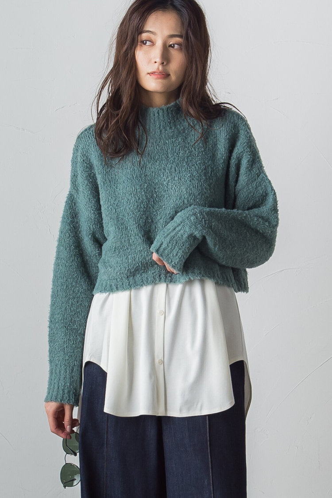

<!DOCTYPE html>
<html lang="ja">
<head>
   <meta charset="UTF-8">
   <meta http-equiv="X-UA-Compatible" content="IE=edge">
   <meta name="viewport" content="width=device-width, initial-scale=1.0">
   <title>パーソナルカラー診断</title>
</head>
   
</body>
</html>
<html>
<head>
  <title>パーソナルカラー診断</title>
  <meta charset="utf-8">
  <link rel="stylesheet" type="text/css" href="sinri.css">
</head>
<body>
</script>

<div class="choose_box">
      <!-- 質問一覧 -->
      <div class="app-theme">
        <p>パーソナルカラー診断</p>
      </div>
      <!-- 質問1 -->
      <div id="q_01" class="fit">
        <p>質問1: 腕の内側から見える血管は何色に見える？</p>
        <ul>
          <li><a class="btn" href="#q_02" data-value="a">緑っぽく見える</a></li>
          <li><a class="btn" href="#q_02" data-value="b">青っぽく見える</a></li>
        </ul>
      </div>

      <!-- 質問2 -->
      <div id="q_02" style="display: none;">
        <p>質問2:肌のお悩みで多いのは？</p>
        <ul>
          <li><a class="btn" href="#q_03" data-value="a">くすみやすい</a></li>
          <li><a class="btn" href="#q_03" data-value="b">血色感がない</a></li>
        </ul>
      </div>

      <!-- 質問3 -->
      <div id="q_03" style="display: none;">
        <p>質問3:手のひらの色はどちらに近い？</p>
        <ul>
          <li><a class="btn" href="#q_04" data-value="a">オレンジまたは、黄色っぽい</a></li>
          <li><a class="btn" href="#q_04" data-value="b">ピンクまたは、青っぽい</a></li>
        </ul>
      </div>

      <!-- 質問4 -->
      <div id="q_04" style="display: none;">
        <p>質問4:白目の色はどちらに近い？</p>
        <ul>
          <li><a class="btn" href="#q_05" data-value="a">アイボリーのような柔らかな色</a></li>
          <li><a class="btn" href="#q_05" data-value="b">水色のようなクールな色</a></li>
        </ul>
      </div>

      <!-- 質問5 -->
      <div id="q_05" style="display: none;">
        <p>質問5:どちらのアクセサリーが似合う？</p>
        <ul>
          <li><a class="btn" href="#q_06" data-value="a">ゴールド系</a></li>
          <li><a class="btn" href="#q_06" data-value="b">シルバー系</a></li>
        </ul>
      </div>


      <div id="q_06" style="display: none;">
         <p>質問6:瞳の色はどちらに近い？</p>
         <ul>
           <li><a class="btn" href="#q_07" data-value="a">ブラック〜ダークブラウン</a></li>
           <li><a class="btn" href="#q_07" data-value="b">ブラウン〜ライトブラウン</a></li>
         </ul>
       </div>


       <div id="q_07" style="display: none;">
         <p>質問7:顔の赤みは？</p>
         <ul>
           <li><a class="btn end"  data-value="a">出にくい</a></li>
           <li><a class="btn end"  data-value="b">出やすい</a></li>
         </ul>
       </div>


<!-- ここから以下回答 -->
  <!-- 回答の答え1 -->
     <div id="answer_01" class="result" style="display: none;">
      <div class="result_theme ">
            <p>あなたのパーソナルカラーは…</p>
      </div>
      <div class="result_type0 ">
            <h4>『イエローベース』</h4>
      </div>

      <div class="iebe">
        <p></p>
      </div>

      <div class="result_discription0">
        <h2>暖色系や黄味の効いたカラーが似合うよ!</h2>
        <p>
         ＜イエベさんにおすすめの服紹介＞
        </p>
      </div>

      <div class="link">


    
        <a href="https://www.j-lounge.jp/ec/items/2112-18027?cc=006001" target="_blank"></a>
   
        <a href="https://www.j-lounge.jp/ec/items/3113-17714?cc=012001" target="_blank"></a> 
    
        <a href="https://www.j-lounge.jp/ec/items/2201-17092?cc=005001" target="_blank"></a> 
   
   
   </div>


       <div class="return-btn">
        <a class="return" href="sinri.html">もどる</a>
       </div>

     </div>


  <!-- 回答の答え2 -->
     <div id="answer_02" style="display: none;">
          <div class="result_theme ">
            <p>あなたのパーソナルカラーは…</p>
      </div>

      <div class="result_type1 ">
            <h4>『ブルーベース』</h4>
      </div>

      <div class="burube">
        <p></p>
      </div>

      <div class="result_discription1">
        <h2>寒色系や青味の効いたカラーが似合うよ!</h2>
        <p>
          ＜ブルベさんにおすすめの服紹介＞
        </p>
      </div>

   <div class="link">


    
    <a href="https://www.j-lounge.jp/ec/items/2312-16151?cc=007011" target="_blank"></a>

    <a href="https://www.j-lounge.jp/ec/items/3804-17014?cc=007011" target="_blank"></a> 

    <a href="https://www.j-lounge.jp/ec/items/4101-16216?cc=008001" target="_blank"></a> 


     </div>


       <div class="return-btn">
        <a class="return" href="sinri.html">もどる</a>
       </div>
     </div>

 </div>


  <script src="https://ajax.googleapis.com/ajax/libs/jquery/3.6.0/jquery.min.js"></script>
  <script type="text/javascript" src="sinri.js"></script>
</body>
</html>